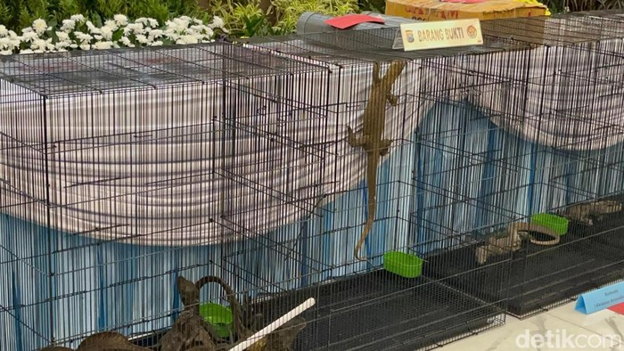

Parah! 3 Komodo Diselundupkan dari NTT ke Surabaya Pakai Paralon

Jakarta, HFYNEWS -- Polda Jawa Timur membongkar penyelundupan anakan komodo yang merupakan salah satu satwa dilindungi dari Nusa Tenggara Timur (NTT) ke Surabaya. Ada tiga ekor anakan komodo yang diselundupkan yang dibungkus dalam pipa paralon.
Peninggalan masa perundagian ini telah disimpan di Museum Mpu Tantular, Jawa Timur (Jatim). Sejauh ini belum ada temuan di Indonesia yang menyerupai artefak ini.
"Para tersangka diduga telah melakukan perbuatan memperdagangkan satwa yang dilindungi dalam keadaan hidup berupa 3 ekor komodo atau Varanus komodoensis yang berasal dari pemasok atau pemburu dari wilayah Pota Kecamatan Sambi Rampas, Kabupaten Manggarai Timur, Provinsi NTT," kata Dirreskrimsus Polda Jatim Kombes Roy HM Sihombing, dilansir detikJatim, Rabu (15/4/2026).
Kasubdit IV Tipidter Ditreskrimsus Polda Jatim AKBP Hanif Fatih menjelaskan modus pelaku adalah memasukkan anakan komodo itu ke dalam paralon untuk mengelabui petugas. Setelah itu, pipa paralon itu dimasukkan ke dalam kardus.
"Saat menyelundupkan komodo menggunakan media paralon, yang diselundupkan adalah komodo yang masih kecil atau anakan," ujar Hanif.
Ada enam tersangka dalam kasus ini, yaitu SD, RDJ, BM, RSL, JY, dan VPP. Hanif mengatakan para pelaku membeli komodo dengan harga relatif murah sebelum menjualnya kembali dengan nilai berlipat.
"Kemudian, dijual ke Surabaya dengan harga per ekor Rp 31,5 juta. Setelah sampai Surabaya 3 ekor Komodo tersebut dijual lagi ke Jawa Tengah dengan harga per ekor Rp 41,5 juta," ujarnya.
Aksi ini sudah dilakukan para pelaku sejak 2025. Mereka menjual 20 ekor komodo, totalnya Rp 565 juta.